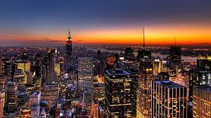

“There is something in the New York air that makes sleep useless.”
As one of the world’s leading metropolises for art, fashion, food and theater, New York is a city every traveler should visit. Whether you come for a day trip or for an extended stay, choosing what to see and do is the toughest part – the possibilities are endless. Here are some reasons why visiting New York will be an unforgettable experience. New York is not only the most famous city in the world but also, arguably, the best for tourists, thanks to its diverse culture and myriad of entertainment options. There's never a dull day in the city that doesn't sleep. New York City offers visitors endless possibilities, great diversity, and high energy
Visitors who think New York is Manhattan alone miss out on the sights and activities offered by the city’s four other boroughs. Head out to the New York Botanical Garden and the Bronx Zoo in the Bronx. Take your pick from the array of amazing ethnic restaurants in Queens. Explore the burgeoning Brooklyn neighborhoods of Williamsburg, Greenpoint and Red Hook. And bear in mind that no trip to New York is complete without a ride on the Staten Island Ferry; you can also take the opportunity to visit the Staten Island Museum in Snug Harbor.
NYC’s art scene is unparalleled. The Metropolitan Museum of Art, the Museum of Modern Art, the Guggenheim and other museums present great art from around the world, while galleries in the Lower East Side and Chelsea promote new talent. There’s much more to savor than art, however. See the famous blue whale and animal dioramas at the American Museum of Natural History; learn about America’s most famous jazzman at the Louis Armstrong House Museum, and about the history of Lower East Side immigrants at the Tenement Museum; walk along the deck of a World War II aircraft carrier at the Intrepid Sea, Air & Space Museum.
Few experiences are as humbling as walking down a Manhattan street with skyscrapers towering over you. From 1930s monuments like the Empire State Building and the Chrysler Building to the One World Trade Center (aka the Freedom Tower), completed in 2013, these gigantic beauties have to be seen to be believed. The views from the Empire State Building are not only awe-inspiring, by day and by night; they also communicate a sense of the city’s vastness within the context of the surrounding land; on a clear day, five states are visible from the observation deck.
There are music gigs in New York every day of the year, many of them performed by some of the most famous artists from around the world. Sellout acts play the stadiums Madison Square Garden and Brooklyn’s Barclays Center, though venues like Radio City Music Hall, the Beacon Theater, Irving Plaza, the Hammerstein Ballroom, Webster Hall, Williamsburg’s Brooklyn Steel and Kings Theater in Flatbush also attract big names. Cool acts sometimes play smaller venues like the Bowery Ballroom or Williamsburg’s Baby’s All Right, while dozens of bars host up-and-comers (and has-beens). Birdland, Blue Note, Village Vanguard, Iridium and Cornelia Street Café are among the city’s top jazz clubs.
Brash and electrifying, NYC marches to its own propulsive beat. Yellow and green cabs stream down Fifth Avenue, showtime performers pull off astonishing acrobatics on subway car poles, steam pours from gratings in the street, horse-drawn carriages clatter round Central Park and sirens wail every few minutes. Once you’ve experienced NYC’s energy, everywhere else seems slow – a ‘New York minute’ really does fly by. Are you ready to wake up in a city that never sleeps?